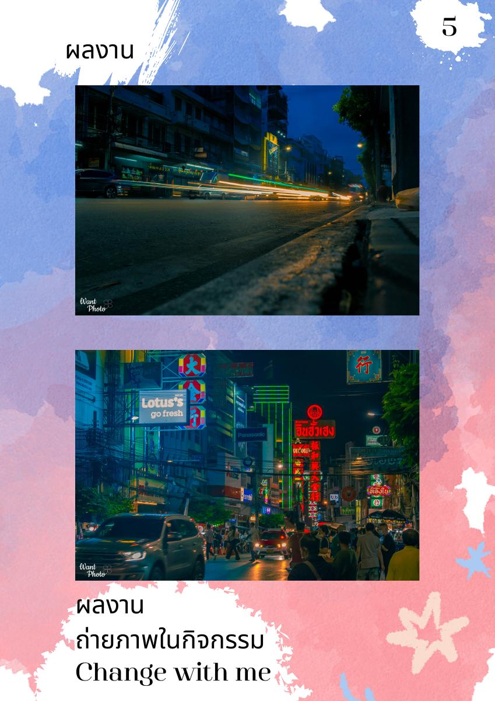
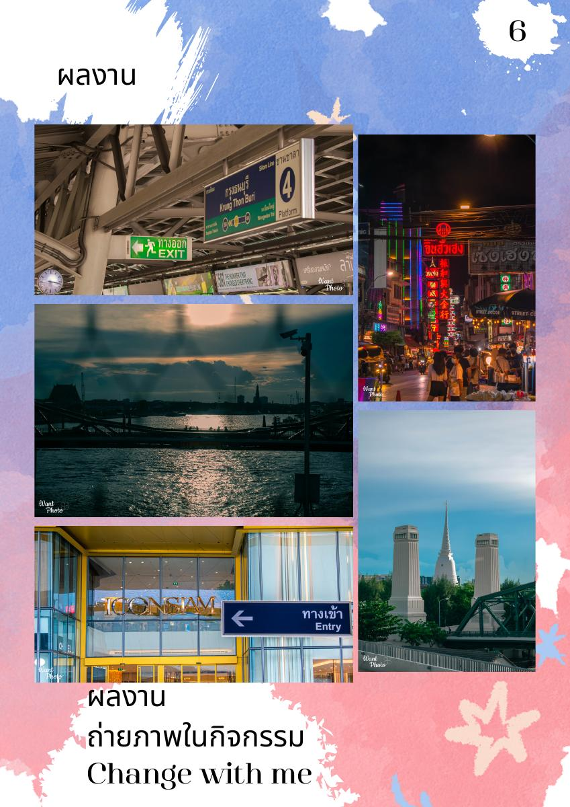
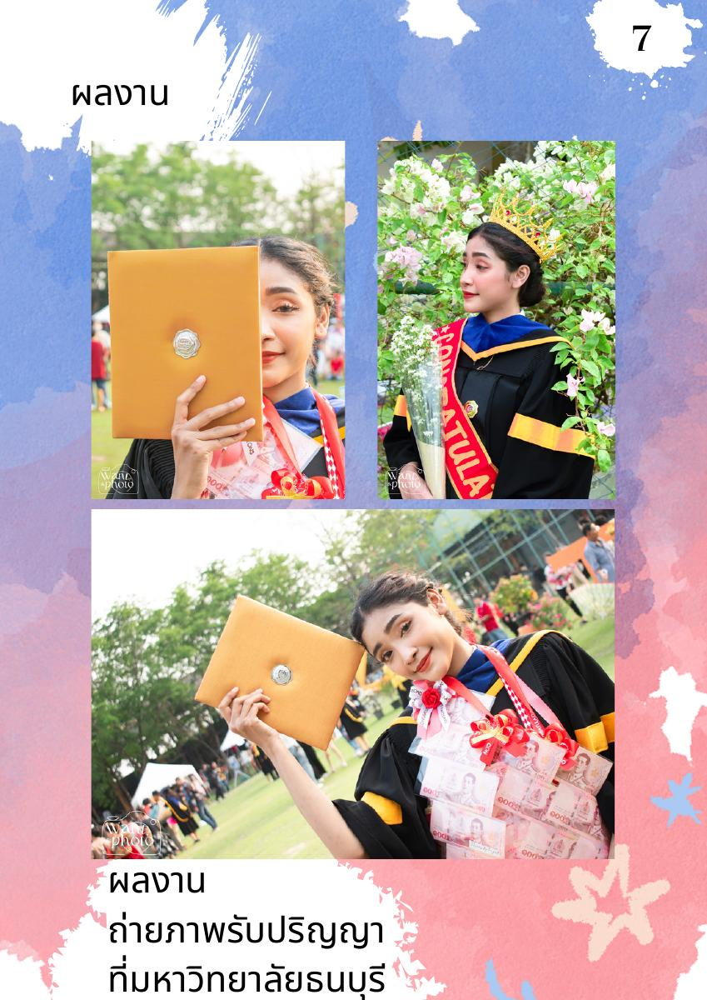
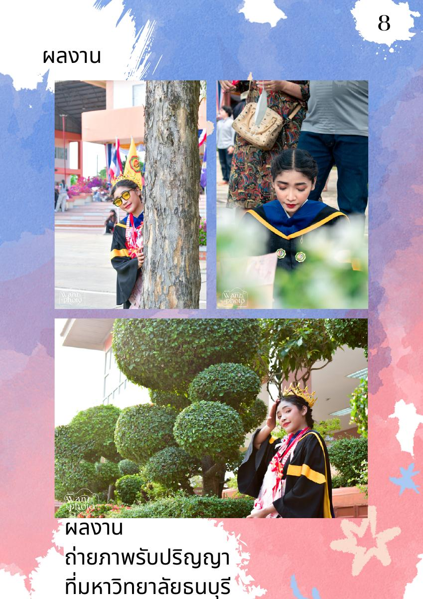
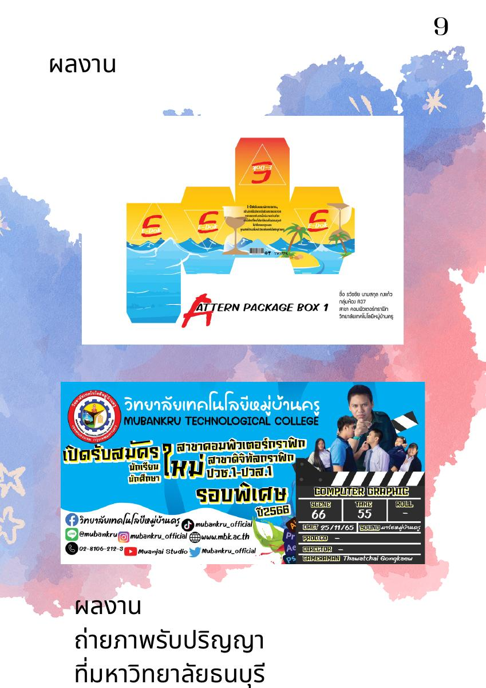

VISUAL CREATIVE / GRAPHIC DESIGN / PHOTOGRAPHY
Thawatchai
Gongkaew
นักศึกษาสายดิจิทัลกราฟิกที่สนใจงานภาพ งานออกแบบ และการถ่ายภาพ พร้อมนำทักษะด้านกราฟิก การแต่งภาพ และวิดีโอไปสร้างผลงานที่มีเรื่องราว
01Frames tell stories.
THAWATCHAIcreative portfolio
PHOTO
& DESIGN
& DESIGN
02 / PROFILE
เกี่ยวกับผม
“ผมชอบเปลี่ยนไอเดียให้กลายเป็นภาพที่สื่อสารได้จริง”
ธวัชชัย กงแก้ว เป็นนักศึกษาสาขาดิจิทัลกราฟิก แผนกศิลปกรรม จากวิทยาลัยเทคโนโลยีหมู่บ้านครู สนใจงานออกแบบกราฟิก การถ่ายภาพ การแต่งภาพ และการตัดต่อวิดีโอ
ผลงานใน Portfolio แสดงทั้งงานถ่ายภาพกิจกรรม งานถ่ายภาพรับปริญญา และประสบการณ์ฝึกงาน ซึ่งสะท้อนความสนใจด้าน Visual และการทำงานจริง
ชื่อธวัชชัย กงแก้ว
ชื่อเล่นเกม
เกิด24 กุมภาพันธ์ 2547
สายการเรียนดิจิทัลกราฟิก
สัญชาติไทย
03 / TOOLKIT
ทักษะและเครื่องมือ
01
Adobe Illustrator
Graphic / Vector / Layout
02
Adobe Photoshop
Retouch / Composite / Design
03
After Effects
Motion / Visual Effects
04
Premiere Pro
Video Editing / Storytelling
05
Lightroom Classic
Color / Photo Editing
06
Photography
Composition / Event / Street
04 / SELECTED WORKS
ผลงานที่เลือก
คัดเลือกจาก Portfolio เดิมและจัดวางใหม่ด้วยแนวคิด Polaroid Memories




05 / EXPERIENCE
การศึกษา & ประสบการณ์
EDUCATION
วิทยาลัยเทคโนโลยีหมู่บ้านครู
แผนกศิลปกรรม — สาขาดิจิทัลกราฟิก
ระดับประกาศนียบัตรวิชาชีพ (ปวช.)INTERNSHIP
เอ็น พี ออนไลน์
ประสบการณ์ฝึกงาน
ประสบการณ์ทำงานจริงที่ระบุไว้ใน PortfolioACTIVITY
Change with me
เข้าร่วมกิจกรรมและสร้างผลงานถ่ายภาพ
Photography / Event Documentation06 / CERTIFICATE
เกียรติบัตร
มีเกียรติบัตรจบการศึกษาระดับประกาศนียบัตรวิชาชีพตามข้อมูลใน Portfolio
CERT
01
01
07 / LET'S CONNECT
พร้อมสร้างงานภาพ
ที่น่าจดจำไปด้วยกัน
หากกำลังมองหานักออกแบบกราฟิก ช่างภาพ หรือผู้ช่วยด้าน Visual Content สามารถติดต่อเพื่อพูดคุยเกี่ยวกับงานได้
หมายเหตุ: แก้ไขอีเมล เบอร์โทร และลิงก์โซเชียลในไฟล์นี้ก่อนนำไปสมัครงาน